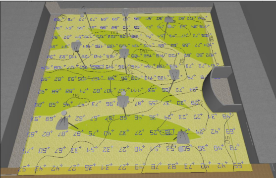
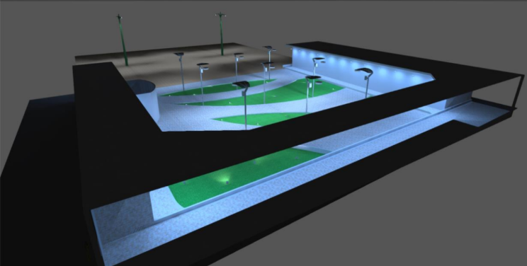

La luz tiene el poder de transformar los espacios, no solo en términos de visibilidad, sino también en percepción, eficiencia y bienestar. Con el desarrollo de tecnologías especializadas, hoy contamos con herramientas avanzadas para diseñar ambientes que sean funcionales, estéticamente agradables y energéticamente eficientes. Una de las más destacadas en este campo es Dialux, un software profesional de simulación de iluminación.

¿Qué es Dialux?
Dialux es un programa de diseño y simulación lumínica utilizado por arquitectos, ingenieros, diseñadores de interiores, técnicos en electricidad y especialistas en eficiencia energética. Permite modelar en 2D y 3D todo tipo de espacios, tanto interiores como exteriores, y calcular la iluminancia, distribución de luz, consumo energético, entre otros parámetros.
Este software se alimenta de catálogos actualizados de luminarias de marcas reconocidas como Philips, Osram, Trilux, GE, entre otras. Esto posibilita realizar simulaciones realistas con equipos que existen en el mercado, facilitando el paso del diseño digital a la implementación real.
Optimización del consumo energético
Uno de los principales beneficios de utilizar DIALux es su capacidad para optimizar el uso de la energía eléctrica en proyectos de iluminación. Al permitir simular diferentes configuraciones de luminarias, ubicaciones, tipos de lámparas y niveles de potencia, DIALux ofrece al diseñador la posibilidad de encontrar la alternativa más eficiente desde el punto de vista energético sin comprometer la calidad de la iluminación.
Gracias a estas simulaciones, es posible identificar puntos donde se produce un exceso o una deficiencia de luz, y ajustar el diseño para reducir el consumo innecesario. Esto no solo tiene un impacto positivo en el medio ambiente, sino que también permite a los clientes ahorrar en costos operativos a largo plazo. La eficiencia energética se vuelve especialmente relevante en proyectos de gran escala como centros comerciales o instalaciones industriales.
Precisión técnica
DIALux se distingue por su capacidad para realizar cálculos técnicos precisos y detallados. La herramienta permite medir niveles de iluminancia (expresados en lux), evaluar el índice de deslumbramiento unificado (UGR) y analizar la distribución de luz en un espacio determinado. Estos datos técnicos son fundamentales para garantizar que el diseño cumpla con los requisitos funcionales y de confort visual para los usuarios del espacio.
Además, DIALux ofrece simulaciones avanzadas que consideran aspectos como el color de las superficies, la reflectancia de los materiales y la ubicación de ventanas o fuentes de luz natural. Esto permite que los cálculos reflejen condiciones más realistas, resultando en un diseño técnico más confiable y coherente con el entorno real.
Visualización 3D realista
Una de las funciones más valoradas por diseñadores e ingenieros es la capacidad de DIALux para generar visualizaciones en 3D con un alto nivel de realismo. Estas representaciones permiten a los clientes ver con anticipación cómo lucirá el proyecto una vez instalado, lo que facilita la toma de decisiones y mejora la comunicación entre las partes involucradas.
Las visualizaciones incluyen detalles como sombras, reflejos, temperaturas de color e intensidad de la luz, lo que ayuda a transmitir no solo la funcionalidad, sino también el ambiente y la estética del diseño. Esta característica es particularmente útil en presentaciones comerciales, concursos de arquitectura o aprobación de proyectos ante entidades reguladoras.
Adaptabilidad
DIALux es una herramienta versátil que se adapta a una amplia gama de espacios y necesidades. Ya sea que se trate de un proyecto pequeño en una vivienda particular o de una instalación compleja en un estadio o parque industrial, el software permite ajustar sus parámetros a las condiciones específicas de cada tipo de espacio.
Además, cuenta con una amplia biblioteca de luminarias y materiales proporcionada por fabricantes reconocidos, lo que permite diseñar con componentes reales y asegurar que el proyecto sea viable desde el punto de vista técnico y económico. Esta flexibilidad convierte a DIALux en una opción preferida para profesionales del diseño de iluminación en diversos sectores.
Integración con normas
Cumplir con normativas técnicas de iluminación es un aspecto crucial en cualquier proyecto, y DIALux facilita esta tarea al incorporar estándares reconocidos como la norma europea EN 12464, entre otras. Estas normativas especifican los niveles mínimos de iluminancia y otros parámetros necesarios para garantizar condiciones de visibilidad, seguridad y confort en distintos tipos de entornos laborales o públicos.
Al utilizar DIALux, el diseñador puede asegurarse de que su propuesta no solo sea estéticamente atractiva, sino que también cumpla con los requisitos legales y técnicos exigidos por autoridades locales o internacionales. Esto reduce riesgos de incumplimiento y evita retrabajos o sanciones posteriores a la implementación del sistema de iluminación.
Con Dialux, la iluminación deja de ser un accesorio para convertirse en una herramienta estratégica. Este software transforma el modo en que diseñamos espacios, priorizando el confort, la eficiencia y la estética. No importa si trabajas en un proyecto residencial, comercial o urbano: una buena iluminación mejora la calidad de vida, reduce costos y eleva el valor de tu propuesta.
👉 En Domotic House and Security te ayudamos a convertir esa propuesta en realidad, combinando tecnología y diseño para lograr espacios inteligentes y perfectamente iluminados.